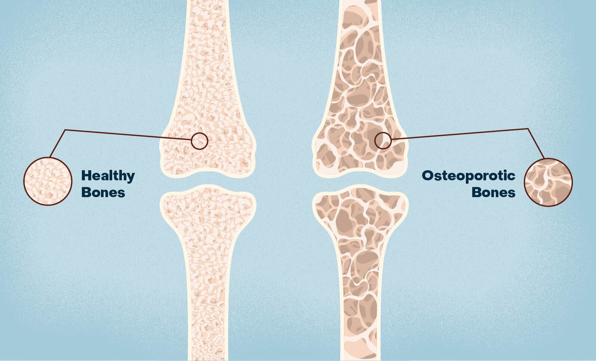
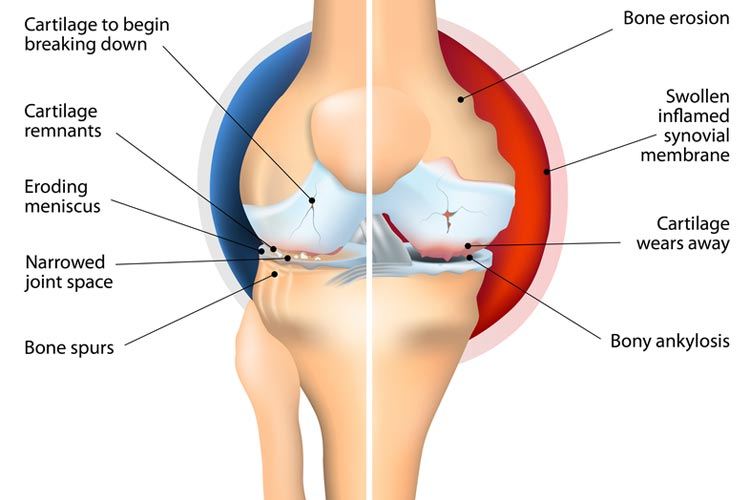
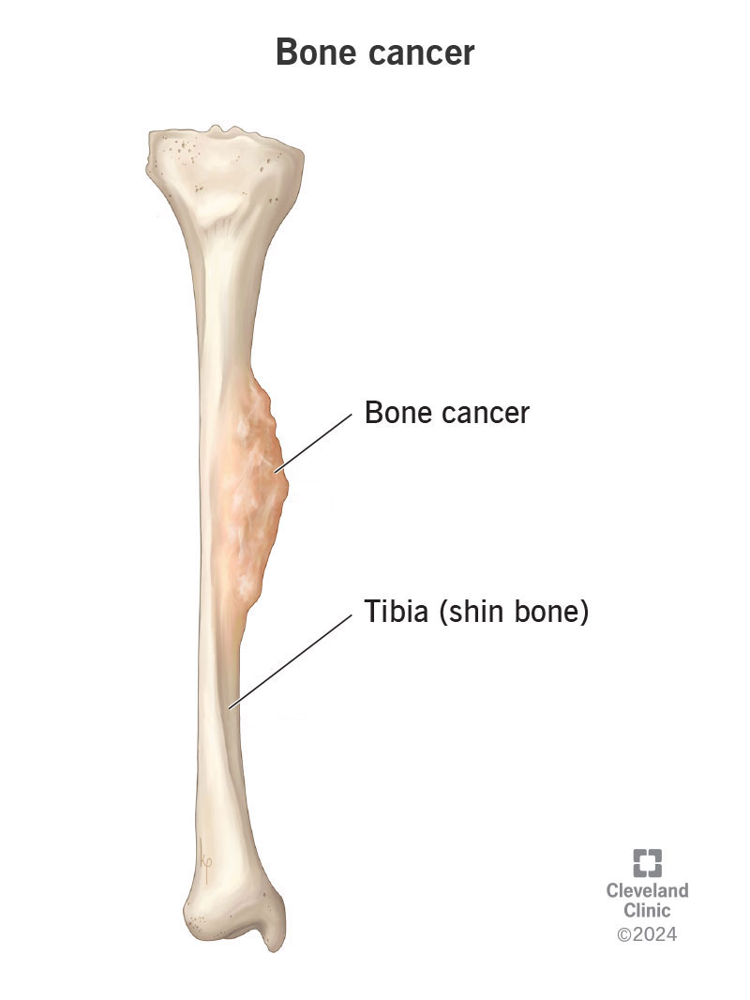

Major Skeletal System Diseases
The skeletal system is susceptible to various conditions that can impact mobility and overall health. Our team analyzed the following disorders to understand how biomedical robotics can provide advanced therapeutic solutions.
1. Osteoporosis
Description: A condition where bones become weak and brittle due to low bone density.
It is a silent disease that often goes undetected until a fracture occurs, affecting millions
of elderly individuals worldwide.
Cause: An imbalance in the bone remodeling process, where bone resorption exceeds
formation, often linked to aging and nutritional deficiencies.
Solution: Targeted drug delivery to stimulate osteoblast activity, calcium supplementation,
and early screening with DEXA scans to prevent fractures.
2. Arthritis (Osteoarthritis)
Description: The most common joint disorder, characterized by the degeneration of
protective cartilage at the ends of bones, leading to pain and stiffness.
Cause: Progressive wear and tear of joint tissues over time, often exacerbated by
previous injuries or mechanical stress.
Solution: Management through physical therapy, anti-inflammatory treatments, and
lifestyle modifications to reduce joint pressure.
3. Bone Cancer (Osteosarcoma)
Description: A malignant primary bone tumor that typically develops during
periods of rapid growth, such as adolescence.
Cause: Complex genetic mutations in bone-forming cells that lead to uncontrolled
cell division and tumor growth.
Solution: Conventional treatments include chemotherapy, surgical tumor removal,
and precision medicine to target cancerous cells.
4. Scoliosis
Description: An abnormal curvature of the spine that occurs most often
during the growth spurt just before puberty.
Cause: While many cases are idiopathic, others result from neuromuscular conditions
or congenital developmental issues.
Solution: Corrective bracing, specialized physical therapy, and spinal fusion surgery
for the most severe cases.
Visual Reference


